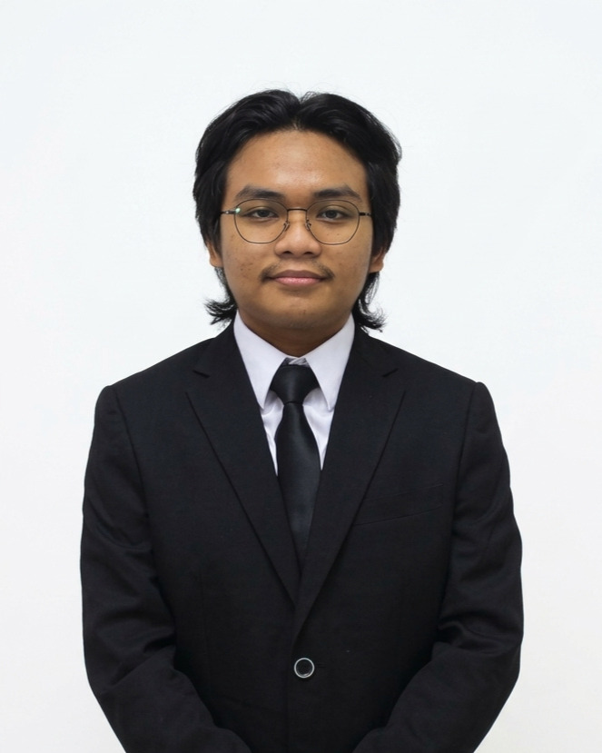

FKI · UMS LABUAN · 2026
Hi, I'm Datu Ari Fakrul Danish Ahmad Petri.
Welcome to my digital space.
I am a Bachelor of Multimedia Technology student at the Faculty of Computing and Informatics (FKI), Universiti Malaysia Sabah (UMS), Labuan International Campus. I am interested in web development, 3D modelling, and creating interactive digital media.

MY STORY
A little introduction.
My name is Datu Ari Fakrul Danish Ahmad Petri, and I go by Datu. I am an undergraduate student at Fakulti Komputeran dan Informatik (FKI), Universiti Malaysia Sabah Kampus Antarabangsa Labuan (UMSKAL), pursuing a Bachelor of Multimedia Technology.
Based in Sabah, Malaysia, I enjoy blending structured software engineering with creative multimedia from building responsive web applications to modeling 3D environments and experimenting with WebAR.
My future goal: To develop intuitive, human-centered web and spatial multimedia applications that bridge creative visual design with reliable computing.
LET'S CONNECT
Thanks for stopping by.
Explore my projects, view my Semester 5 timetable, or leave a comment on the final page.